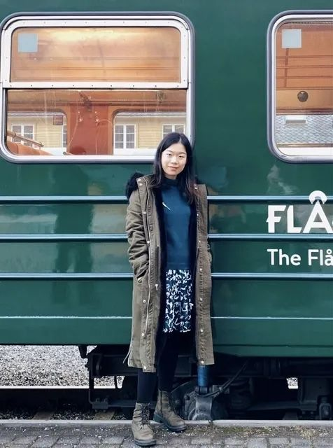
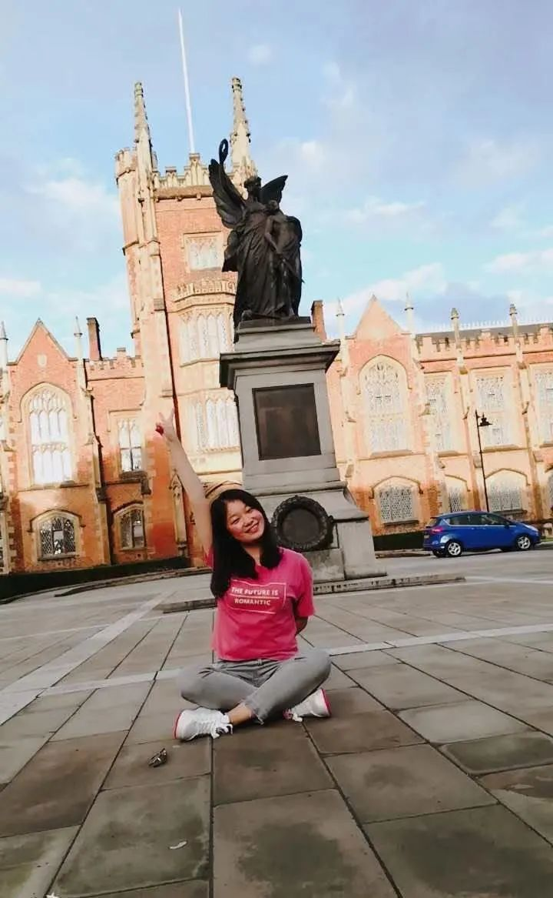
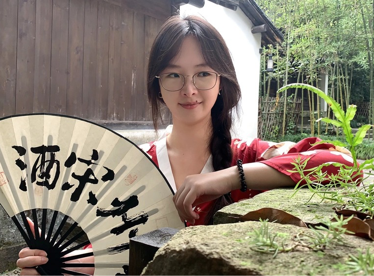

2020-21届成员介绍
会长
王颖捷

王颖捷，纽卡斯尔大学硕士/博士，毕业后在伯明翰大学和牛津大学做博士后研究。我目前的研究兴趣是了解遗传性心肌疾病的炎症反应，包括肥厚性和扩张型心肌病（即HCM和DCM）。自2013年来，和志同道合的朋友们一起创办了牛津华人生命科学协会，致力于为在牛津生命科学领域学习工作的学生学者创业者们提供一个交流合作的平台。
组织部部长
刘赓

我叫刘赓，现任学会组织部部长。 牛津大学Oncology的博后，在ORCRB（俗称绿楼）工作。主要研究方向是转录因子E2F-Rb信号通路调控RNA编辑剪切从而影响肿瘤免疫。业余爱好：下厨（黑暗料理），追剧（英剧美剧），运动（徒步旅行）。希望大家多多支持和参与学会的各项活动，也欢迎大家对活动的形式和内容提出各类建议和意见！
执行主席/宣传部部长
郑健青

获肯尼迪奖学金资助于牛津大学DPhil第二年在读，此前获海伦哈姆林奖学金资助MRes毕业于帝国理工。研究领域包括生物医学图像分析及其术前诊疗，手术导航的应用。目前主要研究方向为骨关节炎的CT图像分析量化。于国际会议及SCI期刊发表相关研究成果十余篇。在科研转化方面有一项专利，并带领团队获得中国教育部“春晖杯”创业创新大赛优胜奖。爱好唱K，健身，电影。
秘书长
梁竹

Dphil in Clinical Medicine第三年，exeter college，专注炎症小体在神经退行性疾病中的研究。（他很神秘不愿意透露过多信息，想多了解可以关注我们公众号）。
财长
张叶川

大家好，我叫张叶川，来自牛津大学生物医药工程系，目前攻读博士第二年。今年是我在牛津的第6个年头了，在此博士之前，我拿到了牛津大学数学与统计系本科与硕士学位，对牛津的生活文化都十分了解。在学期生活之余，我也积极参与校外科研项目以及暑期实习，曾经参与斯坦福大学、清华大学等科研项目，也在麦肯锡、梅斯医学等公司实习过。闲暇时间里，喜欢练习英文书法和研究中国茶文化，是妥妥的“老茶客”一枚。
外联部部长
杜越

杜越，爱丁堡大学博士，牛津大学博士后，美国基因治疗和细胞治疗协会（ASGCT）成员，英国囊性纤维肿基因治疗组织（GTC）成员，主要科研方向是基因编辑和治疗现任职于英国牛津大学医学院。主导了多项科研项目，研究成果多次在国际会议展示，SCI学术发表在【 Molecular Therapy 】【 Journal of Pineal Research 】等核心期刊。在科研成果转化方面，带领团队获得华为杯英国帝国理工大学创新大赛最佳路演奖、中国教育部“春晖杯”创业创新大赛优胜奖、南京六合创业创新大赛二等奖等。
外联部
张盛盼

我是张盛盼，就读于牛津大学病理系，生物医学二年级博士一枚，研究方向是HIV-1在细胞间传播的分子机制及其对免疫缺陷和炎症等系列并发症治疗的应用。工作上与实验佛系爱恨纠缠，生活中对一切新鲜事物充满好奇，喜欢旅行冒险尝试一些刺激运动。很开心能通过OCLSS这个平台与大家合作交流。
陈劲廷

大家好呀，我叫陈劲廷，是今年大二仍在苦苦挣扎的化学学生。平时有空也会研究下做饭和摄影，希望能和学长学姐多学习交流。
组织部
秦岭

大家好，我叫秦岭 (但我不负责中国南北气候差异，后院也没有野生大熊猫)。Christ Church 学院，牛津 Clinical Medicine 博士第二年在读，研究方向为病毒入侵宿主分子机制。业余爱好一切棋类和球类运动 (篮球除外)，偶尔玩玩魔方。
孙天依

我是孙天依，目前就读于牛津大学，为药理学系博三学生，研究方向为PdCM（Pnmt+心肌细胞亚群）的特性结构和生理病理功能。我乐观积极，喜欢与人交流，每当和不同学科不同背景的人交流，与不同的人进行思维碰撞，总能让我多一分对世界的认知与喜爱。除此之外，我还喜欢旅行和体验生活，积极参与各个活动。很荣幸可以加入OCLSS，希望可以通过组织不同类型的研讨会、分享会和讲座，让更多人了解这个组织，从中收获很多。
宣传部
Sandy Chu

我于2013年在伦敦大学学院（UCL）获得了生理和药理学荣誉学士学位。之后，在伦敦玛丽女王大学完成了硕博连读。博士期间专研了C型利钠肽（C-type natriuretic peptide）在心脏功能中的生理作用。我于2018年加入牛津大学Keith Channon教授的实验室，研究方向主要为四氢生物蝶呤（tetrahydrobiopterin）在心脏中的结构、功能与代谢。我喜欢参加科研研讨会和各种各样的公众参与活动。例如，我曾担任Pint of Science 的活动小组经理，把有趣的科学以轻松的形式带给普罗大众，并有回馈社会的机会。我希望透过参与OCLSS 的发展和组织可以丰富学术知识和加强人际网络。
陈欣雨

hello大家好，我是陈欣雨，目前是大一化学新生，担任宣传的职位，主要负责管理公众号和发送推文的工作。日常是刷剧刷电影发呆散步看杂书打羽毛球，最近也开始发展一些户外运动了。喜欢的电影很杂，一个人安静的时候最喜欢看战争片或者纪录片，或者听着歌四处走走。想学会调酒做饭尤克里里，想去冰岛稻城阿那亚，疫情结束后一定要去伦敦看音乐剧。我喜欢尝试不同领域的新事物，如果有什么想分享的可以来找我，我特别乐意去了解。
李奇点

大家好，我叫李奇点，目前是牛津大学化学系博三，主要研究镧系元素在生物成像方面的应用。旅英6年，在伯明翰大学完成本科，在帝国理工完成硕士学业。学习和工作之余，在奶茶店做part time~~太喜欢珍珠奶茶了！如果大家有空可以来贡茶找我玩~~不是广告。还喜欢猫猫狗狗，还喜欢挣钱，如果有挣钱的活儿请一定要告诉我~~。参加过一些创投大赛，不过没挣到钱。